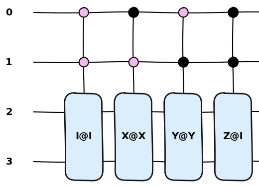

circ_make
概要
この関数は与えられた情報からブロックエンコーディングの回路を自動的に組み上げる
引数一覧
argument name |
type |
role |
|---|---|---|
gate_inf |
str |
パウリ行列積の情報 |
zero_one |
list(elements:int) |
制御ビットの状態に関する情報 |
circ |
QuantumCircuit(qulacs) |
組み上げ先の回路 |
qubit |
int |
量子回路に必要な総ビット数 |
ancilla |
int |
量子回路に必要な補助ビット数 |
Python code
def circ_make(gate_inf, zero_one, circ, qubit, ancilla):
work_ope_order = []
input_switch = 0
input_ele = ""
if gate_inf == "":
gate_a = [[1., 0.],
[0., 1.]]
for i in range(int(qubit - ancilla)):
gate = DenseMatrix(int(ancilla + i), gate_a)
mat_no = to_matrix_gate(gate)
for j in range(len(zero_one)):
cont_pos = len(zero_one) - j - 1
mat_no.add_control_qubit(cont_pos, zero_one[j])
circ.add_gate(mat_no)
else:
for i in range(len(gate_inf)):
if i < len(gate_inf) - 1.5:
if input_switch > 0.3:
work_ope_order.append(input_ele)
input_ele = ""
input_switch = 0
if gate_inf[i+1] == "X":
input_switch = 1
if gate_inf[i+1] == "Y":
input_switch = 1
if gate_inf[i+1] == "Z":
input_switch = 1
if gate_inf[i+1] == "I":
input_switch = 1
input_ele += gate_inf[i]
else:
work_ope_order.append(input_ele)
input_switch = 0
work_ope_order[-1] += gate_inf[-1]
for i in range(len(work_ope_order)):
num_inf = ""
for j in range(len(work_ope_order[i])-1):
num_inf += work_ope_order[i][j+1]
tag_num = int(num_inf)
gate_pos = qubit - tag_num - 1
if work_ope_order[i][0] == "X":
gate_a = X(gate_pos)
mat_no = to_matrix_gate(gate_a)
for j in range(len(zero_one)):
cont_pos = len(zero_one) - j - 1
mat_no.add_control_qubit(cont_pos,
zero_one[j])
elif work_ope_order[i][0] == "Y":
gate_a = Y(gate_pos)
mat_no = to_matrix_gate(gate_a)
for j in range(len(zero_one)):
cont_pos = len(zero_one) - j - 1
mat_no.add_control_qubit(cont_pos,
zero_one[j])
elif work_ope_order[i][0] == "Z":
gate_a = Z(gate_pos)
mat_no = to_matrix_gate(gate_a)
for j in range(len(zero_one)):
cont_pos = len(zero_one) - j - 1
mat_no.add_control_qubit(cont_pos,
zero_one[j])
elif work_ope_order[i][0] == "I":
gate_a = [[1, 0],
[0, 1]]
gate = DenseMatrix(int(gate_inf[2*i+1]), gate_a)
mat_no = to_matrix_gate(gate)
for j in range(len(zero_one)):
cont_pos = len(zero_one) - j - 1
mat_no.add_control_qubit(cont_pos,
zero_one[j])
circ.add_gate(mat_no)
実行例
[7]:
import numpy as np
import pitbe
from qulacs import QuantumState, QuantumCircuit
from qulacs.gate import X, Y, Z, DenseMatrix, to_matrix_gate
[8]:
circuit = QuantumCircuit(4)
ope_lst = ["I0I1", "X0X1", "Y0Y1", "Z0I1"]
cont_list = [[0, 0], [1, 0],
[0, 1], [1, 1]]
for j in range(len(cont_list)):
pitbe.circ_make(ope_lst[j], cont_list[j], circuit, 4, 2)
作成された回路図

注意点
前述の通りこの関数には「qulacs」のクラスを一部用いているので 必ず関数のimport部分で「qulacs」をimportすること
また引数「zero_list」の値に説明時に触れたもの以外を 代入した場合想定外の挙動をとる場合もある